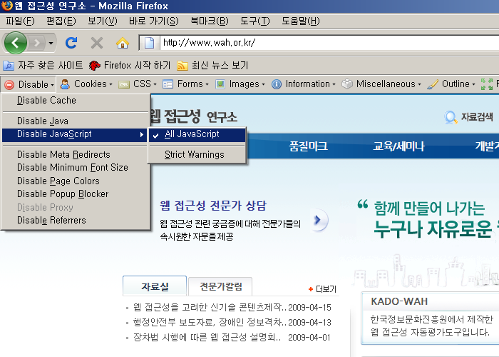

점검 방법 및 준수/위반 사례
이전
목차
다음
파이어폭스 + 부가기능 Web Developer 툴바
4-1. 신기술의 사용
점검 가능 지표
링크, 서식, 버튼은 자바스크립트 없이도 작동할 수 있는가?
점검 방법 설명
파이어폭스 [도구]-[Web Developer]-[Disable]-[Disable JavaScript]-[All JavaScript] 를 선택하여
자바스크립트를 제거한 화면에서 링크, 서식, 버튼이 동작하는지 확인하다.
